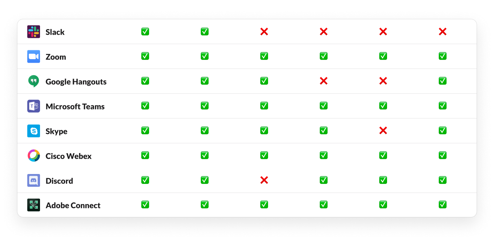

üì≤ Slack Calls
Reimagining work calls through user research and design.
I’m a major fan of Slack and use it constantly for work, projects, and team building. I consider Slack essential to my remote workflow. But the one thing I haven’t found myself doing is making Slack calls. Prior to this project, I made less than five calls on Slack! Although Slack has been vital to my work communications, I find that most of my virtual meetings pivot to using other platforms, even if we are on the Standard or Enterprise plans.
Because of COVID-19, I understand how important calls are to remote work. They help us stay connected with each other and give us the human connection that we've all been missing during the quarantine. Slack has already helped thousands of Americans transition to remote work – they just need better Slack Calls to make the switch even easier.
Tools
Figma, Design Thinking
Time
Fall 2020 (2 weeks)
Position
UX/UI Designer and Researcher
Challenge
2021 Kleiner Perkins Design Challenge
üåê A Remote World
Redesigning Slack calls needs background on the way Slack operates. Slack's mission statement is "Making work simpler, more pleasant, and more productive," and they've made strides to make work even easier during the pandemic when remote work surged because of stay-at-home orders.
From their research in March, Slack found that:
- 45% of knowledge workers surveyed work remotely
- 66% of remote workers are doing so because of Covid-19 concerns
- 27% of remote workers say they “normally” work from home
Remote work in the age of COVID-19 is already difficult enough because tnof distanced communication, team restructuring, and increased health risks for family members and loved ones. Technology and tools should serve to ease burdens between remote work, and Slack calls should strive to be part of the solution.
☎️ What does Slack lack?
Despite Slack launching in December 2015, Slack calls have stayed relatively unchanged since its inception. As of December 2020, using video on Slack calls through the mobile apps is still not supported on all devices.
Slack calls are not officially supported on virtual machines or across its three pricing plans: Free, Standard, and Enterprise.
Features
- Audio
- Video (not supported on mobile)
- Reactions
- Group calls up to 15 users (not supported on the Free plan)
- Screen sharing (not supported on the Free plan)
Evaluating the competition
Compared to other platforms, Slack calls lack key features like whiteboards, recordings, breakouts, and chatting. This makes it less competitive with other work productivity software and applications that can even offer these features for free.
Major competitors like Zoom, Cisco Webex, Adobe Connect, and Microsoft Teams have all of the features above, and other applications are not too far behind.
Competitive analysis of six features across eight different calling applications in the remote space

Reactions
Currently, Slack reactions offer a few emojis and the ability to send a quick, disappearing message.
Available on Free, Standard and Enterprise plans

Screen Sharing
Slack offers you the option to share your screen and use the draw tool, which fades on use.
Available only on Standard and Enterprise plans

Group Calls
You can currently make group calls for up to 15 users only. Video is not supported on mobile.
Available only on Standard and Enterprise plans
Opportunity for Innovation
Slack is a high impact platform affecting 12 million daily active users as of 2020, and that number will surely grow during the pandemic.
There is a huge opportunity for Slack to refine existing features and imagine new calling features that can integrate into the remote work experience. Slack’s current business model is to offer users a limited number of features for free and encourage them to purchase Standard or Enterprise users to access advanced features and functionalities.
We can apply this model to Slack calls by creating a great one-to-one experience that can trigger the consumer activation process, motivating users to move onto the next stage: purchasing and maintaining long-term plans with Slack.
üíº Understanding everyday remote workers
I interviewed two groups of people – Free and Standard plan users. I used a combination of interview questions and usability tests to learn more about remote work challenges and gauge overall familiarity with the Slack product.
User Research
After an extensive round of interviews, I used affinity mapping to help me observe patterns in my findings. This process allowed me to generalize ideas, suggestions, and pain points.
User Interviews
I sought out interviews from two groups: Free and Standard users. I wanted to examine how these different customer bases interacted with Slack calls. For the Free group, I invited them into a new Slack workspace I created for this challenge and asked them to explore Slack call’s basic functions by receiving and making a call. For the Standard users, I asked them to do the same task, but also test sharing their screens.


Affinity Mapping
After, I began to create user affinity diagrams to understand and observe patterns in my findings. This thematic analysis helped me to uncover patterns in what my interviewees wanted from Slack and common ideas in their thought processes
Key Insights
While I found 18 key themes throughout my interviews around Slack notifications, remote work, and post-call features, I chose to focus on the five core themes that formed the basis of my redesign.
"I was not very impressed with the obviousness of the various features. I would not know most of these features exist." - Holden
To make Slack more intuitive for the user, it'd be important to add in additional functions and simplify native features, like making pinning people in calls easier and making the settings more understandable.
"I almost always have Slack open... it would feel more like useful if [Slack Calls] had more has the features we talked about that would make it like more productive and more oriented for work." - Charlie
Adding apps for users in the Standard or Enterprise plan provides a market incentive for users to switch to Slack. If users like using a tool together, they would be more inclined to pay for the ability to integrate apps cross-functionally
"I don't like how reactions just disappear... Especially if it's regarding business, I feel like you'd want that record...I don't think you can review it, at least from what I can see." - Julianna
From usability testing, none of the participants I interviewed could initially figure out how to send a message on Slack calls without guidance, and all were frustrated with the disappearing messages. Creating a chat panel instead of reactions that stored messages would make it easier to chat freely without worrying that their message would disappear before someone else sees it.
"While you're screen sharing, being able to get a broader note or greater idea of what the participants in the call are doing would really, really help." - Sathya
Sharing screens currently have only one option on Slack calls to draw on them. While this is helpful, drawing does fade away, and it could be difficult to make points or remember where exactly you drew unless you were able to save that information.
"Recording is a must... maybe a team member is absent and you want to record instead of taking meeting notes so that they can actually see everything that's happening." - Haixin
Including recordings on Slack calls would be extremely helpful as a way to keep track and log what occurs during meetings.
"The biggest thing that Zoom really struggles with is breakout rooms and how to group people. So I think if Slack wants to have some sort of edge over the competition in that sense, that's where." - Nicole
Breakout rooms are popular because they allow you to easily communicate in small groups during meetings and would be especially helpful for socializing,** an important aspect of the Slack environment.
Lastly, additional customizations can make a Slack call feel more personal to a user and accommodate for a diverse set of needs and desires.
✏️ Design Process
Sketching in low-fidelity
I took into account all of this information to help me experiment! Below are notes and ideas that I jotted to help me make sense of my findings and test out potential changes for existing and new features. I explored the interactions between my ideas.
Sketches of general layout, chats, and reactions
Rough outline of ideas for new features
Planning the information architecture
While making a platform that makes video and audio calls might seem simple, throughout multiple steps in the process, I often had to reflect on this map in order to determine how I wanted my designs for the features to fit together.
Information architecture map of features in my redesigned version of Slack Calls.
Prototyping in high-fidelity
Following my information architecture map and first few low-fidelity sketches, I set out to wireframe and prototype. Thank goodness I planned first!
Prototyping my design required me to think deeply about where all my connections were going. I constantly referred to my earlier insights and information architecture map to think about how each step in the process interacted with each other.
ü§ô Welcome to the future of Slack Calls
After a few days of hard work and plenty of calls, here is the redesign of the Slack call conferencing platform.
üÜì Solution: Free Plan
Goal: Refine existing features that focus on the one-to-one call experience for Free users.
Pinning Videos
Making it easier to pin users by adding a hover state before selecting a user, adding a larger pin and unpin button for users with video, and using a low opacity gradient on video calls to make icon labels stand out.
Settings
Reducing the number of levels on the microphone to 10 to make it easier for a user to determine their sound quality without selecting a device first. Adding advanced features like locking a meeting and closed captioning for privacy and accessibility reasons.

Chats, not reactions
Creating a new chat panel will make it easier for users to send and receive messages. By dragging up or down, users will be able to view or hide past messages.
Users type longer custom messages with emojis and send fun reactions that animate upwards while allowing legibility for existing messages.
üí∏ Solution: Standard and Enterprise Plan
Goal: Build new features that help gain and retain paid users on Standard and Enterprise plans.
App Integrations
Adding apps can make Slack users want to collaborate and work together through Slack calls. It also provides market value by allowing Slack to form new partnerships with brands and companies to join its product platforms.

Share Screen and Whiteboards
There are now more options for sharing a screen, including through an external device and through a whiteboard. Users can now also view participants while sharing a screen in a Participants modal.
Users can now collaborate through text, post-it notes, highlighting, drawing together, and even chat messages or reactions.

Recordings, Breakout Rooms, and Customizations
Users can record meetings and save them to their Slack workspace. The "Add People" panel now supports more options to send invites. The "Participants" panel can help you view a list of members on the call, change view settings, and make breakout rooms with the options join randomly, in pairs, and in self-selected groups.
üíå Conclusion
This redesign was really challenging! I tried to align my work with Slack's branding and vision while still making design decisions that would add new ideas and features to the conferencing platform.
Takeaways
- Redesigning Slack calls also helped me gain a better understanding and appreciation for the work that it takes to envision a product from start to finish.
- I learned a lot about the process that it takes to think through different features, integrate user feedback, and analyze critical product features in the market!
Next Steps
I would love to continue to iterate by building out the notifications for incoming and outgoing Slack calls using the other key insights that I found through my user research. It would be extremely interesting to see how users can make calls easier and more quickly through Slack, and whether the location and ease of access to making a call would change their engagement with Slack.
Because of my experience working with front-end development, I would love to gain experience building the UI for some of these features in this design challenge with Slack's software engineering team.